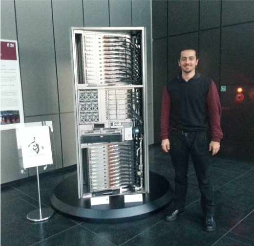
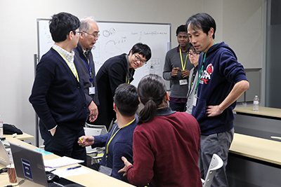

February, 2019
Exchange at
RIKEN
Research exchange at the RIKEN - Center for Computational Science (R-CCS) scientific research institute, Kobe - Japan.
There, I took a place in the 3rd Youth Workshop and the 1st R-CCS International RIKEN Symposium in which I proposed solutions to improve energy consumption in high performance environments such as HPC, Grid Computing, Big Data, and Cloud Computing.
The first R-CCS International Symposium
There I've got the opportunity in learning how the biggest Japanese institute for computational science manage their processes and propose scientific solutions to usual human problems.
The evet also discussed about the evolution and new technologies of the K computer, today knowed as Fugaku, being according to the June 2023 analysis as the second most powerfull HPC computer according to Top500.
After the registrations and the talks presented in site I had the opportunity in participating of the Poster Presentation section as disposed as number 58 in the previous link.
There I presented my work entitled "An Approach of Energy Aware in HPC Environment" that has the following abstract:

Abstract
"With the exponential growth of computational power, data-intensive computing and petascale scientific applications are consuming a large amounts of processing and resources. In light of this, power management becomes a big issue for this kind of environment that needs to manage the correct spend of energy consumption. These applications are normally a kind of parallel computing applications, which use techniques, to improve the performance, data processing, post-hoc analysis and visualization. Usually, these applications need to accesses the storage device to save or manage information, which implies a high IO request rate, increasing then the energy consumption. High energy consumption is one of the most important issues in HPC environments. Multiple directions are being proposed by researchers to minimize these power challenge in HPC environments. Some of these directions are: 1) processing power needed by applications, 2) correct management of data and hardware to enhance power usage, 3) scheduling of tasks, 4) fault-tolerance mecanism throught checkpointing-restart in HPC environments among others. As we can see, these studies are being developed in HPC environments, but it's still necessary these energy-aware consumption be extended and managed in HPV scenario. This study focuses on the energy aware in High Performance Computing as well as High Performance Visualization environments proposing an approach that colaborates with green computing paradigms"
RIKEN HPC Youth Workshop
After the Symposion, we concentrate our efforts on the RIKEN HPC Youth Workshop. In the figure disposed below I'm (big hair, red sweater and back to the photo) discussing with my group wich techniques and solutions we would construct considering a problem their presented to us at moment. 
From Friday, February 15 to Sunday, February 17, 2019, the RIKEN Center for Computational Science held the third annual RIKEN R-CCS HPC Youth Workshop. This workshop, which began in the fiscal year of 2016, provides students and young researchers interested in computational science and technology with the chance to interact and gain knowledge from one another.
During this international workshop, a group of 25 individuals refined their abilities to communicate and present research in English through a series of presentations and discussions. The workshop was attended by young researchers and students, both domestic and international, and provided ample opportunities for networking and relationship-building amongst the participants.
The initial portion of the workshop commenced with each participant introducing themselves. This was then followed by a poster and discourse session with the objective of strengthening the ties between all participants. The following day, the workshop included a Senior Talk by R-CCS Deputy Director Sato. Later that day, all participants were separated into smaller groups with two R-CCS researchers acting as mentors, to discuss and agree on a theme for the following day's presentation. The final day of the workshop consisted of a wrap-up meeting, where each group gave their own presentation.
More information of the Youth Workshop can be visualized here.
Youth Workshop Instructions and Youth Workshop Presented Work
Invitation Letter & Certificate of Attendance at RIKEN